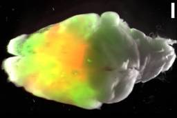

ナゾロジー
https://nazology.kusuguru.co.jp
身近に潜む科学現象から、ちょっと難しい最先端の研究まで、その原理や面白さを分かりやすく伝えられるようにニュースを発信していきます。最新の科学技術やおもしろ実験、不思議な生き物を通して、もう一度、皆さんの心にナゾを解き明かす「ワクワクの火」を灯したいと思っています。
フィード
認知症になった人が多かった「歯ぐきのサイン」とは
ナゾロジー
歯医者さんで細い器具を歯ぐきにそっと当てられ、何やら数字を読み上げられるあの落ち着かない時間。 その歯ぐきの出血が、その後10年のあいだに認知症になるかどうかとつながっているかもしれない、という結果が日本の研究から出てきました。 九州大学の研究者が率いるチームが、認知症ではない60歳以上の日本人1396人を10年間追いかけたのです。 すると、歯ぐきから血が出やすい人ほど、のちに認知症になった人が多いことが分かりました。 歯と歯ぐきのすき間が深い人や、歯ぐきが下がっている人にも、同じような傾向がありました。 ただしこれは「つながりが見えた」という結果で、歯ぐきが原因で認知症になると確かめたわけではありません。 研究内容の詳細は2026年8月16日に『Journal of Clinical Periodontology』にて発表されました。
1時間前

マウスの大脳皮質の9割以上を「ヒトの脳組織」に置き換えることに成功
ナゾロジー
アメリカのスタンフォード大学（Stanford University）などで行われた研究によって、生まれつき大脳皮質をほとんど持たないマウスにヒトの脳組織を移植すると、3か月後にはそのマウスの皮質組織の体積の9割以上がヒト由来の組織で占められることが明らかになりました。 ヒトの神経細胞はマウスの神経系とつながって電気の波を起こし、一部は首の高さの脊髄にまで突起を伸ばしていました。 しかもこの組織には、培養皿ではどうしても作れなかった大型の神経細胞によく似た細胞まで現れていたのです。 研究チームは「これらの動物モデルは、ヒトの脳回路に生じた病気に関わる変化が、まるごとの神経系の中でどう表れるのかを調べる、またとない機会をもたらします」と述べています。 では、大脳皮質をヒトの細胞に明け渡したマウスは、いったいどんな変化が起きたのでしょうか？ 研究内容の詳細は2026年9月16日に『Natur…
4時間前
100年ぶりの新種猫「ティルカヨ」―― 発見の経緯、種の解説
ナゾロジー
ネコの図鑑に新しいページが増える。そんな出来事を、いま生きている人のほとんどは一度も見ていません。 家猫より小さな体に、ヒョウのような斑点。 南米ボリビアの、ユンガスと呼ばれる雲霧林(うんむりん、一年中霧に包まれる山の森)にすむこのネコを、地元の人々は昔から「ティルカヨ」と呼んできました。 ところが科学者にとっては、つい最近まで正式には「見つかっていない」動物でした。 ベルギーのアントワープ大学などの研究チームは、このネコが知られていなかった別の種だと、遺伝子の解析で確かめました。 実際のネコの画像はこちら（画像1、画像2）。 野生のネコ科の新種は100年以上ぶりで、根拠は38匹のネコのゲノム(生き物が持つ遺伝情報のすべて)を比べた解析です。 新しい種の名前はレオパルドゥス・ティルカヨ(Leopardus tilcayo)で、南米にすむ小型のネコ「タイガーキャット」の仲間に入ります。 哺…
9時間前

生涯を通してセックスを経験したことがない人の特徴が明らかに
ナゾロジー
私たちの生活において、恋愛やセックスは「当たり前の経験」と考えられがちです。 しかし、実際には一度もセックスを経験しないまま人生を過ごす人も存在します。 その割合は決して大きくはありませんが、「なぜそうなるのか」「どのような特徴を持つのか」という点は、これまでほとんど明らかにされてきませんでした。 そこでオランダ・アムステルダム大学医療センター（Amsterdam UMC）を中心とする国際研究チームは、イギリスの大規模バイオバンク「UK Biobank」やオーストラリアの調査データを用い、数十万人規模で「セックス未経験者」の実態を分析しました。 すると研究の結果、セックスを経験したことのない人々は、教育水準や生活習慣、孤独感や幸福感といった心理的要素、さらには遺伝的な背景にも共通する傾向が見られたのです。 セックスをしないことは単なる個人の選択や偶然と考えられがちでしたが、実際は社会・心…
11時間前
「音だけで小さな球が宙に浮く」、40cm離れても障害物の向こうでも支える超音波に成功
ナゾロジー
音の力だけで物を触らずに宙に浮かせる技術を、音響浮遊といいます。 筑波大学の研究チームは、片側から超音波を当てるだけで、音源から約40cm離れた空中に小さな球を浮かせました。 支えているのは、音だけ。 届く距離は従来の約6倍で、浮かせた球を空中で立体的に動かすこともできています。 複数の物体や丸くない物体、さらには障害物の向こう側でも浮かせられたといいます。 この浮かせ方を空中で実際に示したのは、今回が初めてです。 研究内容の詳細は2026年7月17日に『Physical Review Letters』にて発表されました
14時間前
手術も抗がん剤も効かなかった3歳児のがんが、2回の点滴で消えた
ナゾロジー
アメリカのベイラー医科大学（BCM）などで行われた研究によって、手術でも抗がん剤でも止められなかった3歳男児の肝臓がんが、2回の点滴で消えたことが明らかになりました。 点滴の中身は、この子自身の免疫細胞を改造したものです。 患者自身の免疫細胞を改造して体に戻す治療は、血液のがんでは大きな成果を上げてきた一方、肝臓がんのように塊を作るがんにはあまり通用しないと考えられていましたが、今回のケースでは「完全奏効」を達成しました。 論文では今回の成果について、抗がん剤が効かなくなった塊のがんでも、点滴だけで、しかも体をこわすような副作用を出さずに、がんが消えた状態へ到達できることを示した症例だとしています。 研究内容の詳細は2026年9月10日に『The New England Journal of Medicine』にて発表されました。
1日前
「生きた薬」を1回点滴しただけで骨粗鬆症患者の骨折が94％減――スカスカの内側が埋まり始めていた
ナゾロジー
スペインのムルシア大学（UM）などで行われた研究によって、骨粗鬆症が進んだ患者に、自分の体から取り出した幹細胞を調節して1回だけ点滴したところ、その後2年間の骨折が94%減っていたことが明らかになりました。 骨を作り直す力を持つ幹細胞の存在は前から知られていましたが、血管に流しても骨の奥までたどり着けないことが長年の弱点でした。 しかし新たな研究ではこの幹細胞に「骨髄行き」という信号を上手く加えることで、この問題を解決しました。 研究者らは、1回の投与のあとも骨を作る反応が続いたことから、この調節を行った幹細胞を「生きた薬」と呼んでいます。 しかし、たった1度の点滴が、なぜ何年も効き続けるのでしょうか？ 研究内容の詳細は2026年9月11日に『Cell』にて発表されました。
1日前
少しのお酒でも、生涯の月平均飲酒量が多いほど目を閉じて立つ検査の成績が悪い傾向
ナゾロジー
風呂上がりの缶ビール1本だけが、今日のごほうび。そんな習慣を何年も続けている人は多いはずです。 お酒は少なければ体にほとんど害はない、と長く言われてきました。 その「少量」の目安は、標準的な1杯に換算して女性で1日1杯、男性で2杯までとされています。 この範囲なら、心臓や血管にはむしろ良いとさえ言われてきました。 スタンフォード大学の研究チームは、その範囲で飲んできた健康な大人を調べました。 すると、生涯に飲んだ量が多い人ほど、手先の器用さと平衡感覚の検査の成績が悪い傾向がありました。 手先では利き手の成績が、平衡感覚では目を閉じたときの成績が、飲酒歴と結びついていました。 対象は、たばこを吸わない21〜69歳の健康な大人83人。 直近の1年や3年にどれだけ飲んだかは、検査の成績と比例しませんでした。 関係していたのは、これまでの人生で積み重ねてきた量のほうでした。 手先の器用さと平衡感…
1日前
「よくまばたきする子」ほど頭の切り替えが上手な傾向、幼児のカード分け課題と脳の活動で判明
ナゾロジー
絵本を読んでもらっている子の顔を見ていると、まばたきの多い子と少ない子がいることに気づきます。 ただの癖のように見えるこの回数が、子どもの「頭の切り替えのうまさ」と結びついているかもしれません。 京都大学と筑波大学の研究チームが数えたのは、2〜6歳の幼児113人の、課題中のまばたきの回数。 すると、まばたきの多い子ほど、色で分けていたカードを形で分け直す「ルールの切り替え」が上手でした。 脳の前頭前野のうち、この課題に大事な右側の一部の活動も、まばたきの多い子ほど高い傾向でした。 ただし分かったのは関連であって、まばたきを増やせば切り替えが上手になる、という話ではありません。 研究内容の詳細は2026年9月15日に『Communications Psychology』にて発表されました
1日前
ダーウィンが予言した「虫を食べる高山植物」、ユキノシタの仲間が虫を消化していた
ナゾロジー
ハイキングの帰り、ズボンの裾にべたついた草の毛がくっついて、なかなか取れないことがあります。 舞台は、中国南西部の土のやせた高い山。 そこに生えるユキノシタの仲間の小さな草は、葉も花びらも茎も粘つく毛におおわれています。 1875年、進化論で知られるダーウィンは、ユキノシタの仲間には虫を食べる草がいるかもしれないと考えました。 この草を雲南省の山で調べた研究チームは今回、毛が虫を捕まえるだけでなく、消化して栄養にしていることを確かめました。 つまりこの草は、ダーウィンの予想どおりの食虫植物だったのです。 実際の草の画像はこちら（画像）。 研究内容の詳細は2026年8月4日に『Nature Communications』にて発表されました
1日前